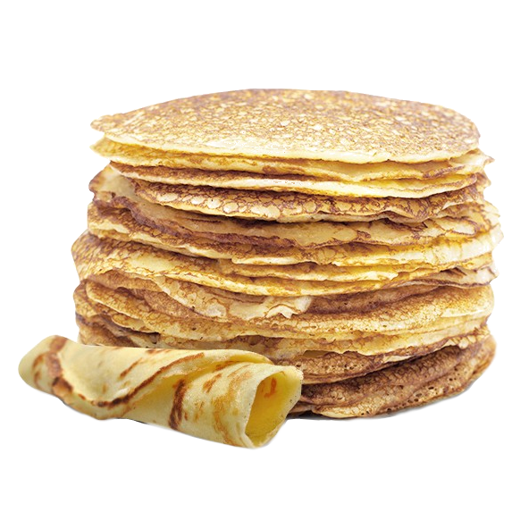

Dutch Pancakes
Classic recipe for Dutch non-leavened pancakes. these are more like crepes, just a little thicker. All ingredients should preferably be at room temperature.
Ingredients
- 400 grams of wheat flour
- 800 ml/grams of milk
- 2 eggs
- 2 grams of Salt
- butter
- any topping of your choosing
Directions
- In a bowl, strain the flour through a strainer to remove any potential clumps and add salt.
- While stirring with a whisk slowly add the milk to the flour until it's all incorporated. (If there are any clumps, strain the batter through a strainer)
- Add in the eggs and whisk until incorporated.
- Preheat a pan on medium / high heat, add butter and wait until there are no more bubbles.
- With a soup ladle scoop the batter into the pan and spread it around by tilting the pan. (This should be about the correct amount of batter to use, depending on the size of your pan / soup ladle this could change. You don't want them to be too thin / thick, they should be around 2mm in thickness)
- Wait until the topside of the pancake is dry / you see the sides are brown. The pancake should be ready to flip, now wait for approximately the same amount of time for the other side to brown.
- All done, now repeat the previous two steps until there is no more batter left.